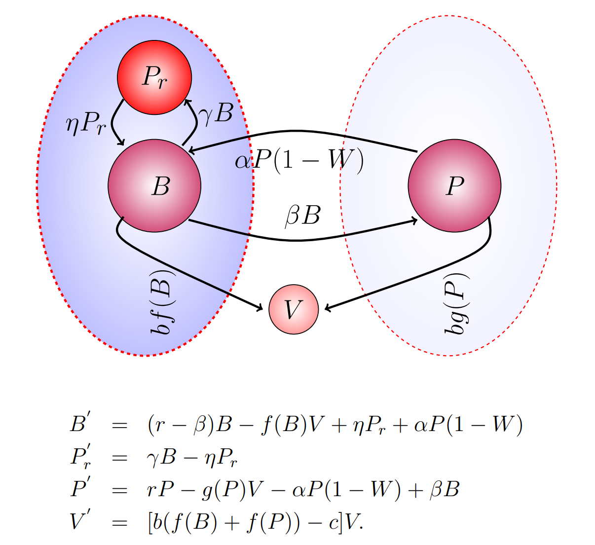
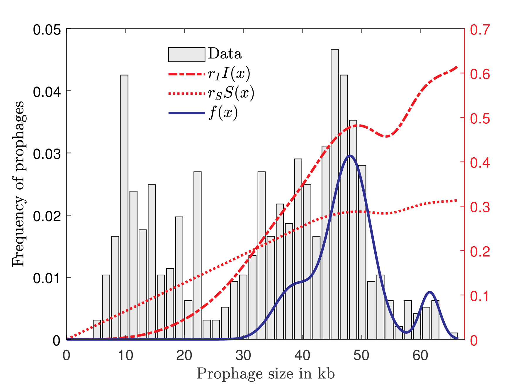

Current ongoing projects

Antimicrobial Resistance: Emergence, Transmission, and Ecology
My interest in mathematical modelling, bacterial genome evolution, and bioinformatics led me to my present position as a postdoctoral fellow in the Faculty of Computer Science at Dalhousie University. Here, I am working with a group of bioinformaticians, computer scientists, and microbiologists on the Genome Canada- funded project "Antimicrobial Resistance: Emergence, Transmission, and Ecology (ARETE)". The ARETE project, comprised of scientists from Dalhousie University, Simon Fraser University, McMaster University, Agriculture and Agri-Food Canada (AAFC), and the Public Health Agency of Canada (PHAC), is looking for a better understanding of which genes contribute to antibiotic resistance and how they spread in the environment. I am applying my mathematical-modeling expertise to several projects in ARETE. The collaboration with government agencies provides the ARETE project with thousands of genomes of pathogenic species with relevance to agriculture and human disease, which creates unique opportunities and challenges from a modelling and bioinformatics point of view.
In addition to modelling this whole phenomenon to understand the spread of antimicrobial resistance (AMR) genes through the community and suggest some public policy guidelines to curb or slow AMR spread, I am also interested in exploring the role of individual mobile genetic elements (MGEs), like integrative conjugative elements (ICEs) and prophages, in the spread of these AMR genes. To accomplish this, I am using ODEs, PDEs, individual-based models, and bioinformatics tools. Bioinformatics tools are used for the detection of MGEs (ICEs and prophages) and AMR genes in the bacterial genomes.
The role of temperate bacteriophages in the maintenance and distribution of Antibiotic Resistance Genes (ARGs). Amjad Khan, Lindi M. Wahl and Robert G Beiko. Canadian Society of Applied and Industrial Mathematics (CAIMS 2021) June 21- 24, 2021 Virtual (hosted by the University of Waterloo, Waterloo, ON, Canada).
Modeling the transmission and loss of an important class of mobile genetic elements. Amjad Khan, Robert G Beiko. Virtual annual Meeting and Conference of the Society for Mathematical Biology SMB 2021 June 13 -17.
Exploring the mobilome and resistome of Enterococcus faecium in a One Health context across two continents. Haley Sanderson, Kristen L. Gray, Alexander Manuele, Finlay Maguire, Amjad Khan ... Robert G. Beiko. preprint, 2022.
Past projects

The evolution and genetic repertoire of prophages (viral genomes integrated within a host bacterial genome)
The evolution and gene content of viral genomes incorporated inside a host bacterial genome (prophages) were studied. We created a mathematical model of the evolutionary dynamics that influence prophage size distribution and fit it to three independent data sets. We were able to offer quantitative estimates of the relative rates of lysogeny, induction, mutational degradation, and selection. We used bioinformatics approaches, analytical modelling, and computational simulation to investigate the genetic repertoire of prophages. Our mathematical and computational approaches predicted that genes involved in phage lytic function are preferentially lost, resulting in shorter prophages that often retain genes that benefit the host. Informed by these models, we offered novel hypotheses for the enrichment of integrase and transposase genes in cryptic prophages. Overall, we demonstrate that functional and cryptic prophages represent a diversity of genetic sequences that evolve along a parasitism-mutualism continuum.
Evolution along the parasitism-mutualism continuum determines the genetic repertoire of prophages. Amjad Khan, Alita R. Burmeister, Lindi M. Wahl. PLoS Computational Biology, 2020.
Quantifying the forces that maintain prophages in bacterial genomes. Amjad Khan, Lindi M. Wahl. Theoretical Population Biology, 2020.
Synergistic action of phage and antibiotics
The synergistic effect of phage therapy and antibiotics in the eradication of biofilm bacteria was investigated. In this context, the biofilm was considered as a group defense mechanism, such that the functional response of phages to the biofilm bacterial density reduces as the biofilm approaches carrying capacity. To capture this mechanism we introdcued the function $f(x)=(κ−\frac{x}{K})x,$ where $x$ is the biofilm density, $K$ is the biofilm carrying capacity and $1<κ<2$ is the group defense parameter. We predicted that complete elimination of biofilm bacteria can be achieved by mechanisms that block the attachment of planktonic bacteria to the biofilm.
Phage therapy and antibiotics for biofilm eradication: a predictive model. Amjad Khan, Lindi M. Wahl, Pei Yu. Recent Advances in Mathematical and Statistical Methods, AMMCS 2017.
Approximations of lattice dynamics
This study was devoted to the study of the Fermi-Pasta-Ulam (FPU) lattice dynamics. FPU lattice with the nonlinear potential which leads to the generalized Korteweg-de Vries (gKDV) equation. We showed that the $H^s (\mathbb{R})$ norm of the solution of the gKDV equation is bounded by a time-independent constant in the subcritical case, whereas the $H^s (\mathbb{R})$ norm grows at most exponentially in time in the critical and supercritical cases. With the help of these results, we extended the time scale for the approximation of the traveling waves of the FPU lattice by the traveling waves of the gKDV equation logarithmically in the subcritical case.
Long-time stability of small FPU solitary waves. Amjad Khan, Dmitry Pelinovsky. Discrete & Continuous Dynamical Systems, 2017.